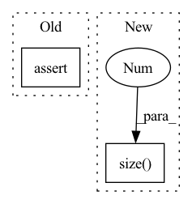

Pattern ID :1869

Before Change
if i != self.ignore_index:
dice_loss = dice(predict[:, i], target[:, i])
if self.weight is not None:
assert self.weight.shape[0] == target.shape[1], \
"Expect weight shape [{}], get[{}]".format(target.shape[1], self.weight.shape[0])
dice_loss *= self.weight[i]
total_loss += dice_loss
After Change
dice = 0.
// dice系数的定义
for i in range(pred.size(1)):
dice += 2 * (pred[:,i] * target[:,i]).sum(dim=1).sum(dim=1).sum(dim=1) / (pred[:,i].pow(2).sum(dim=1).sum(dim=1).sum(dim=1) +
target[:,i].pow(2).sum(dim=1).sum(dim=1).sum(dim=1) + smooth)
// 返回的是dice距离
In pattern: SUPERPATTERN
Frequency: 3
Non-data size: 2
Instances
Fragment ID: 13149064
Project Name: lee-zq/3dunet-pytorch
Commit Name: 070a8816879b33e97a9541e35cc5b2bfaf1bcd76
Time: 2021-05-22
Author: zq_lee@163.com
File Name: utils/loss.py
M Class Name: DiceLoss
N Class Name: DiceLoss
M Method Name: forward(3)
N Method Name: forward(3)
M Parent Class: nn.Module
N Parent Class: nn.Module
M File Name: utils/loss.py
N File Name: utils/loss.py
M Start Line: 78
M End Line: 93
N Start Line: 18
N End Line: 27
'>
Before Change
batch_size = input.size(0)
time_step = input.size(1)
feature_dim = input.size(2)
assert feature_dim == self.n_input
self.agent1_action = []
self.agent1_prob = []
After Change
labtest = x[:, :, self.demo_dim :]
batch_size = labtest.size(0)
time_step = labtest.size(1)
feature_dim = labtest.size(2)
assert feature_dim == self.lab_dim
self.agent1_action = []
'>
Fragment ID: 13149066
Project Name: yhzhu99/covid-ehr-benchmarks
Commit Name: 41e28f49dd30d760c6c439a5cf41590262c9b76b
Time: 2022-06-24
Author: yhzhu99@gmail.com
File Name: app/models/backbones/agent.py
M Class Name: Agent
N Class Name: Agent
M Method Name: forward(2)
N Method Name: forward(3)
M Parent Class: nn.Module
N Parent Class: nn.Module
M File Name: app/models/backbones/agent.py
N File Name: app/models/backbones/agent.py
M Start Line: 118
M End Line: 204
N Start Line: 117
N End Line: 201
'>
Before Change
features = functional.adaptive_avg_pool2d(features, 1).squeeze(-1).squeeze(-1)
assert features.size(1) == self.in_features
pre_landmarks = self.fc(features)
return pre_landmarks
After Change
def forward(self, x):
p4, p8, p16, p32 = self.backbone(x)
p32 = p32.view(p32.size(0), -1)
output = self.fc(p32)
return output, p8
'>
Fragment ID: 13149061
Project Name: github-luffy/pfld_68points_pytorch
Commit Name: d1c8309abf220b0337f742583ce292007ade8203
Time: 2020-08-14
Author: luffyxq@qq.com
File Name: model2.py
M Class Name: EfficientNet
N Class Name: EfficientLM
M Method Name: forward(2)
N Method Name: forward(2)
M Parent Class: nn.Module
N Parent Class: nn.Module
M File Name: model2.py
N File Name: model2.py
M Start Line: 1581
M End Line: 1588
N Start Line: 724
N End Line: 727